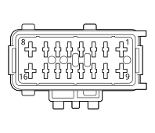

D042B COURTESY LIGHT COUPLING (SUN ROOF BRIDGE)
- Path
- Electrical equipment > 3 CONNECTORS > D INTERMEDIATE COUPLINGS > D042 COURTESY LIGHT COUPLING > D042B COURTESY LIGHT COUPLING (SUN ROOF BRIDGE)
- Kind
- connector pinout (pin -> wire colour -> other end)
- Applies to
- engines: 2.0 16V JTD, 2.2 16V JTD; all production periods; only with equipment: MY 2005
- Interactive page
- https://sloeber94.github.io/elrnDB-fUlss/en/#/179009772
Applies to: engines: 2.0 16V JTD, 2.2 16V JTD; all production periods; only with equipment: MY 2005

Wiring | Colour |
|---|---|
NERO (black) |
Pin | Cable | Destination | |||
|---|---|---|---|---|---|
Sec.. | Colour | Node | Connect. | Pin | |
1 | 1,5 | V - B6807 | 6 | ||
2 | 0,35 | S - 303 | 4 | ||
3 | 0,35 | V - 3030A | 4 | ||
4 | 0,5 | B - 300 | 3 | ||
5 | 1 | Z - A3030 | 2 | ||
6 | 0,5 | G - 3030 | 3 | ||
6 | 0,5 | G - 3020 | 3 | ||
7 | 0,5 | L - V6220 | 4 | ||
8 | 4 | GV - M85A | X | 1 | |
1 | |||||
1 | |||||
2 | |||||
2 | |||||
5 | |||||
3 | |||||
5 | |||||
5 | |||||
5 | |||||
See I133 LEFT SLIDING SIDE DOOR OPENING SWITCH ON COURTESY LIGHT | 3 | ||||
See I134 RIGHT SLIDING SIDE DOOR OPENING SWITCH ON COURTESY LIGHT | 3 | ||||
1 | |||||
8 | |||||
1 | |||||
1 | |||||
7 | |||||
1 | |||||
9 | 1,5 | H - BH68A | 6 | ||
10 | 1 | Z - A30 | X | 2 | |
1 | |||||
2 | |||||
1 | |||||
11 | 0,5 | M - 625 | 6 | ||
12 | 0,5 | C - 8623 | 1 | ||
13 | 0,5 | M - 8487 | 3 | ||
14 | 0,5 | Z - 8488 | 1 | ||
16 | 1,5 | C - BH68B | 6 | ||
Topics linked from this page (18)
- 71 SUN ROOF BRIDGE
- G010A FRONT COURTESY LIGHT (SUN ROOF BRIDGE)
- G011 PASSENGER AREA FRONT COURTESY LIGHT
- G012 PASSENGER AREA REAR COURTESY LIGHT
- G031 DRIVER'S SUN VISOR LIGHT
- G032 PASSENGER SUN VISOR LIGHT
- H061 FRONT SUN ROOF SWITCH
- I110 DOOR CLOSING SWITCH
- I120 CENTRE SUN ROOF SWITCH
- I121 REAR SUN ROOF SWITCH
- I122 CENTRE AND REAR SUN ROOF SWITCH
- I133 LEFT SLIDING SIDE DOOR OPENING SWITCH ON COURTESY LIGHT
- I134 RIGHT SLIDING SIDE DOOR OPENING SWITCH ON COURTESY LIGHT
- N036 FRONT SUN ROOF MOTOR
- N155 CENTRE SUN ROOF MOTOR
- N156 REAR SUN ROOF MOTOR
- P027 MICROTELEPHONE
- P065 ELECTRO-CHROMIC INTERIOR REAR VIEW MIRROR
Topics that link to this page (73)
- B098B ADDITIONAL FUSE BOX (REAR)
- B098B ADDITIONAL FUSE BOX (REAR)
- C031B RIGHT REAR EARTH (REAR)
- C031B RIGHT REAR EARTH (REAR)
- D020A DASHBOARD/REAR COUPLING (DASHBOARD)
- D020A DASHBOARD/REAR COUPLING (REAR)
- D020A DASHBOARD/REAR COUPLING (REAR)
- D020C DASHBOARD/REAR COUPLING (DASHBOARD)
- D020C DASHBOARD/REAR COUPLING (REAR)
- D020C DASHBOARD/REAR COUPLING (REAR)
- D070A DRIVER'S SEAT COUPLING (REAR)
- D071A PASSENGER SEAT COUPLING (REAR)
- D071A PASSENGER SEAT COUPLING (REAR)
- D071B PASSENGER SEAT COUPLING (REAR)
- D197 RIGHT SLIDING DOOR COUPLING (REAR)
- D197 RIGHT SLIDING DOOR COUPLING (REAR)
- F030 LEFT REAR LIGHT CLUSTER (REAR)
- F031 RIGHT REAR LIGHT CLUSTER (REAR)
- G010A FRONT COURTESY LIGHT (SUN ROOF BRIDGE)
- G010A FRONT COURTESY LIGHT (SUN ROOF BRIDGE)
- G011 PASSENGER AREA FRONT COURTESY LIGHT (SUN ROOF BRIDGE)
- G011 PASSENGER AREA FRONT COURTESY LIGHT (SUN ROOF BRIDGE)
- G012 PASSENGER AREA REAR COURTESY LIGHT (SUN ROOF BRIDGE)
- G012 PASSENGER AREA REAR COURTESY LIGHT (SUN ROOF BRIDGE)
- G031 DRIVER'S SUN VISOR LIGHT (SUN ROOF BRIDGE)
- G032 PASSENGER SUN VISOR LIGHT (SUN ROOF BRIDGE)
- H054 ELECTRIC WINDOW SWITCH ON RIGHT REAR DOOR (REAR)
- H061 FRONT SUN ROOF SWITCH (SUN ROOF BRIDGE)
- H125 LEFT REAR ADDITIONAL FAN CONTROL (REAR)
- H126 RIGHT REAR ADDITIONAL FAN CONTROL (REAR)
- H126 RIGHT REAR ADDITIONAL FAN CONTROL (REAR)
- I110 DOOR CLOSING SWITCH (SUN ROOF BRIDGE)
- I110 DOOR CLOSING SWITCH (SUN ROOF BRIDGE)
- I110 DOOR CLOSING SWITCH( SUN ROOF BRIDGE)
- I120 CENTRE SUN ROOF SWITCH (SUN ROOF BRIDGE)
- I120 CENTRE SUN ROOF SWITCH (SUN ROOF BRIDGE)
- I120 CENTRE SUN ROOF SWITCH( SUN ROOF BRIDGE)
- I121 REAR SUN ROOF SWITCH (SUN ROOF BRIDGE)
- I121 REAR SUN ROOF SWITCH (SUN ROOF BRIDGE)
- I121 REAR SUN ROOF SWITCH( SUN ROOF BRIDGE)
- I122 CENTRE AND REAR SUN ROOF SWITCH (SUN ROOF BRIDGE)
- I122 CENTRE AND REAR SUN ROOF SWITCH (SUN ROOF BRIDGE)
- I122 CENTRE AND REAR SUN ROOF SWITCH( SUN ROOF BRIDGE)
- I129 COURTESY LIGHTS DISABLING SWITCH (SUN ROOF BRIDGE)
- I129 COURTESY LIGHTS DISABLING SWITCH( SUN ROOF BRIDGE)
- I133 LEFT SLIDING SIDE DOOR OPENING SWITCH ON COURTESY LIGHT (SUN ROOF BRIDGE)
- I133 LEFT SLIDING SIDE DOOR OPENING SWITCH ON COURTESY LIGHT( SUN ROOF BRIDGE)
- I134 RIGHT SLIDING SIDE DOOR OPENING SWITCH ON COURTESY LIGHT (SUN ROOF BRIDGE)
- I134 RIGHT SLIDING SIDE DOOR OPENING SWITCH ON COURTESY LIGHT (SUN ROOF BRIDGE)
- I134 RIGHT SLIDING SIDE DOOR OPENING SWITCH ON COURTESY LIGHT( SUN ROOF BRIDGE)
- I136 RIGHT SLIDING SIDE DOOR OPENING SWITCH ON RIGHT CENTRE PILLAR (REAR)
- I136 RIGHT SLIDING SIDE DOOR OPENING SWITCH ON RIGHT CENTRE PILLAR (REAR)
- M001F BODY COMPUTER (REAR)
- M001F BODY COMPUTER (REAR)
- M001F BODY COMPUTER (REAR)
- M001F BODY COMPUTER (REAR)
- M001H BODY COMPUTER (REAR)
- M001I BODY COMPUTER (REAR)
- M001I BODY COMPUTER (REAR)
- M001L BODY COMPUTER (REAR)
- M001L BODY COMPUTER (REAR)
- M001L BODY COMPUTER (REAR)
- M001L BODY COMPUTER (REAR)
- N036 FRONT SUN ROOF MOTOR (SUN ROOF BRIDGE)
- N036 FRONT SUN ROOF MOTOR (SUN ROOF BRIDGE)
- N155 CENTRE SUN ROOF MOTOR (SUN ROOF BRIDGE)
- N155 CENTRE SUN ROOF MOTOR (SUN ROOF BRIDGE)
- N156 REAR SUN ROOF MOTOR (SUN ROOF BRIDGE)
- N156 REAR SUN ROOF MOTOR (SUN ROOF BRIDGE)
- P027 MICROTELEPHONE (SUN ROOF BRIDGE)
- P027 MICROTELEPHONE (SUN ROOF BRIDGE)
- P065 ELECTRO-CHROMIC INTERIOR REAR VIEW MIRROR (SUN ROOF BRIDGE)
- P065 ELECTRO-CHROMIC INTERIOR REAR VIEW MIRROR (SUN ROOF BRIDGE)